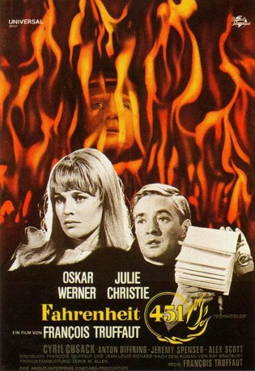
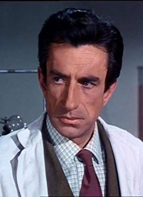

#8832 Fahrenheit 451
 
 IMDB-Wertung: 7.3 / 10
IMDB-Wertung: 7.3 / 10  Tomatometer: 80
Tomatometer: 80  Metascore: 0
Metascore: 0 
In einem utopischen Polizeistaat sind Bücher verboten und Lesen steht unter Strafe. Feuerwehreinheiten überwachen Verdächtige, stöbern verbotene Buchbesitzer auf und zerstören jedes bedruckte Papier. Zu einer dieser gehaßten Einheiten gehört auch Montag, der seine Arbeit liebt und seit 5 Jahren nie eine Frage gestellt hat. Da lernt er eines Tages Clarisse kennen, und plötzlich kommt ihm seine Ehefrau Linda, die ihre Tage mit Tabletten- und Fernsehkonsum verbringt, entsetzlich langweilig vor. Heimlich entflieht er dieser kontrollierten Welt und beginnt nachts zu lesen, obgleich er weiß, daß dies tödliche Konsequenzen haben kann...
Jahr: 1966
Dauer: 112 Minuten
FSK: 12
Land: England Studio: Universal FilmverleihTonspuren: DTS - ,
Untertitel:
Auflösung: 1080p (1920x1040) Größe: 8949 MB
Genre: Drama, Sci-Fi
Regisseur: François Truffaut
Drehbuch: François Truffaut
Soundtrack: Bernard Herrmann
Darsteller:
 Julie Christie als
Julie Christie als - Oskar Werner als
 Cyril Cusack als
Cyril Cusack als  Anton Diffring als
Anton Diffring als - Jeremy Spenser als
-  Alex Scott als
- Ann Bell als
- Yvonne Blake als
- Arthur Cox als
 Kevin Eldon als
Kevin Eldon als - Arthur Haynes als
- Mark Lester als
- Gillian Lewis als
- Anna Palk als
 Donald Pickering als
Donald Pickering als  Reg Thomason als
Reg Thomason als - Bee Duffell als
 Michael Balfour als
Michael Balfour als - Frank Cox als
- Fred Cox als
- Noel Davis als
- Judith Drinan als
- Joan Francis als
- Denis Gilmore als
- David Glover als
- Caroline Hunt als
- Edward Kaye als
- Eric Mason als
- Charlie McFadden als
- Roma Milne als
- Michael Mundell als
- John Rae als
- Tom Watson als
- Chris William als
- Earl Younger als
Datei: X:\1966\Fahrenheit 451 (1966, FSK12, 1920x1040).mkv seit 02.05.2018
Festplatte: HD 1900-1970
 Es gibt insgesamt 27 Filme in der Gruppe '1966'
Es gibt insgesamt 27 Filme in der Gruppe '1966'